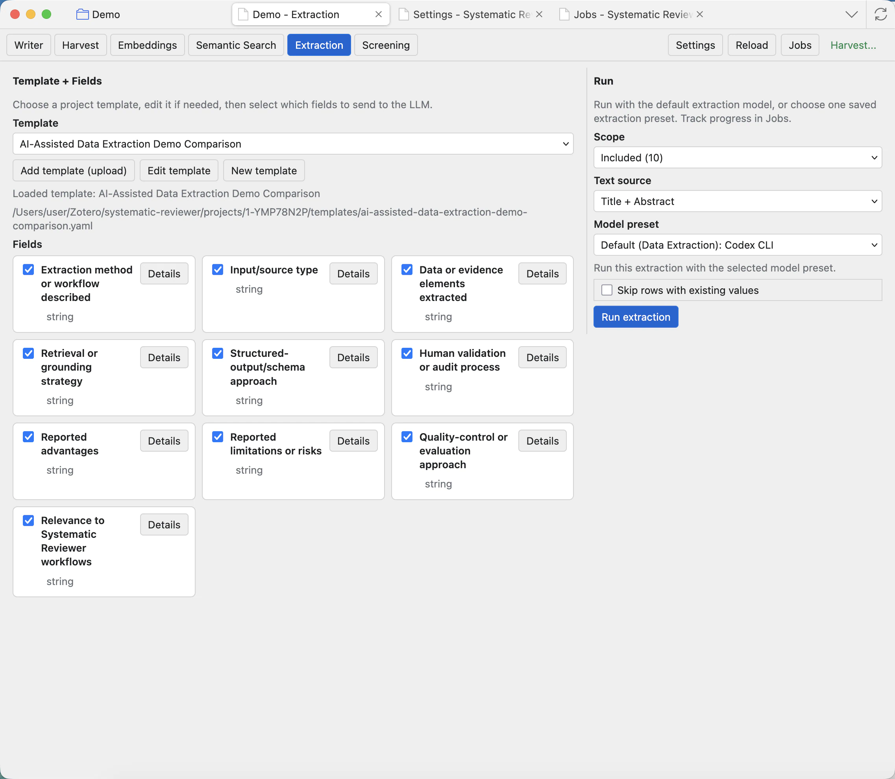
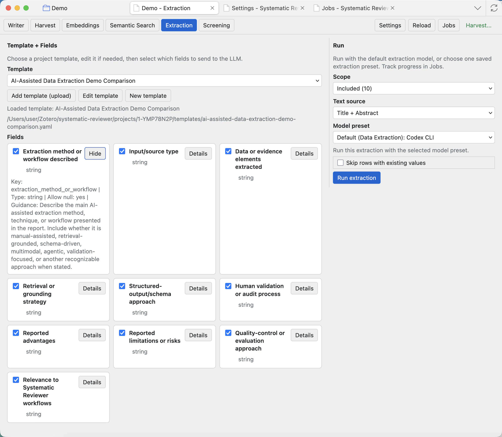
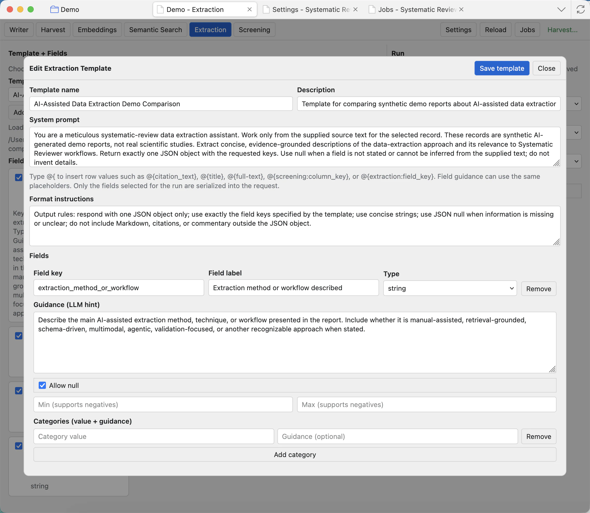

Extraction
Extraction uses a template to ask a model for structured values from project records or full text.

Template controls
Template dropdown
Choose the extraction template. A template defines the fields the model will fill.
Add template (upload)
Imports a template file into the project. Use this when reusing a template from another project.
Edit template
Opens the template editor for the selected template. Use this before running when field instructions need correction.
New template
Creates a fresh template for a new extraction plan.
Hide
Temporarily hides a field from the next run without deleting it from the template.
Field details
Shows each field name, type, key, null handling, guidance, and example output.

Run controls
Choose the record scope, text source, model preset, and whether to skip rows with existing values. The model preset can use the default extraction model, inherit an agent model, or use a saved extraction preset from Settings. The selected model is recorded with the extraction output.
Configure extraction-capable models in Settings: Runtime and model presets before running extraction across a project scope.
- Scope chooses which rows to extract from.
- Text source chooses what text the model sees, such as title and abstract or full text when available.
- Model preset chooses the runtime/model used for extraction.
- Skip rows with existing values prevents overwriting completed rows unless you intentionally rerun them.
- Run extraction queues the extraction job.
Edit the template
The template editor lets you revise the system prompt, format instructions, and fields. Use concise field guidance and include examples when the expected answer shape could be ambiguous.

Review outputs
Extraction results become project columns that can be viewed in Screening, used by the agent, exported, and included in reports. Open Jobs to check progress or errors for long extraction runs.
For reliable extraction, make each field answerable from the supplied document and avoid asking one field to do several unrelated jobs.